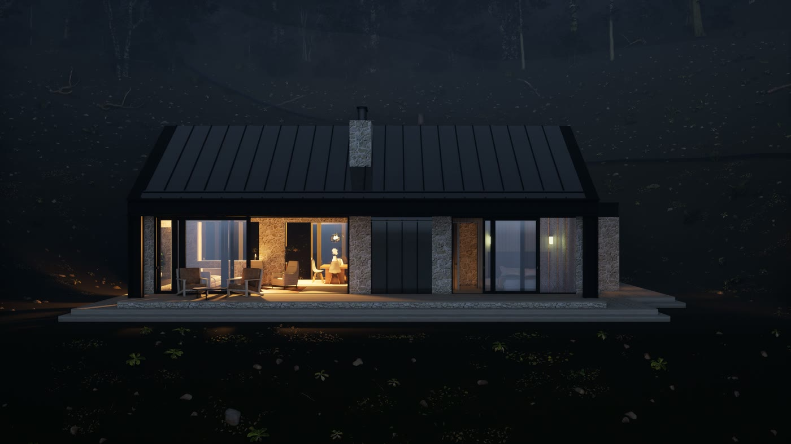
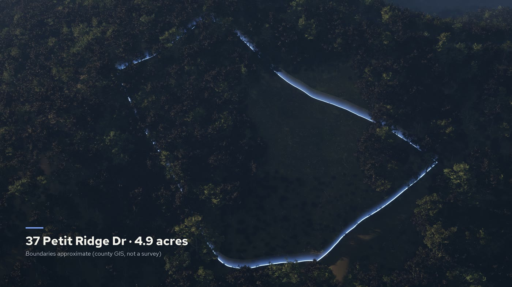
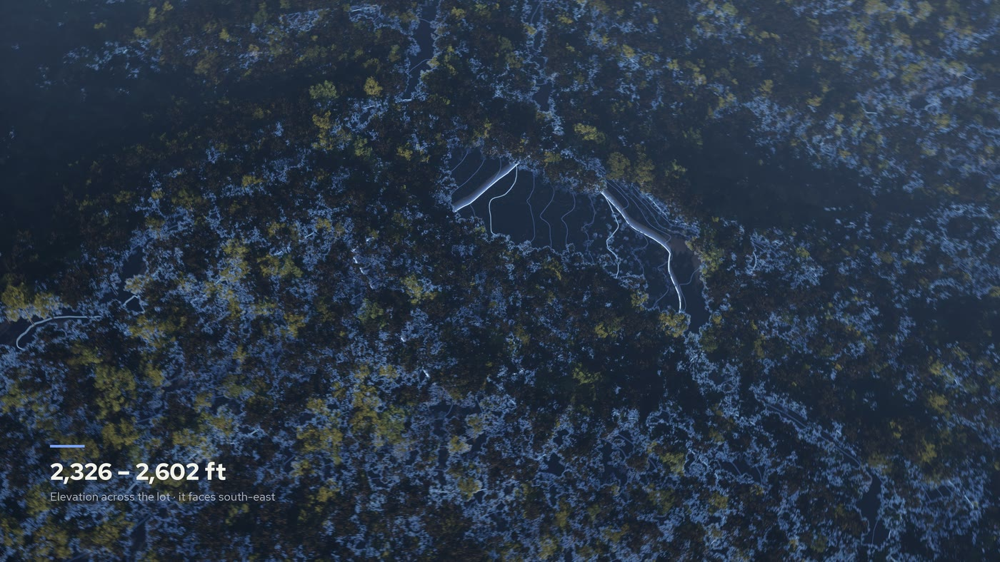
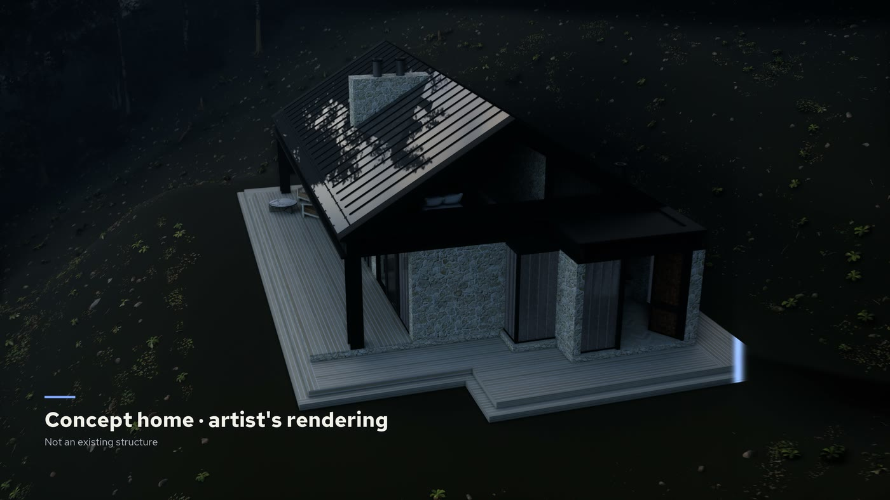
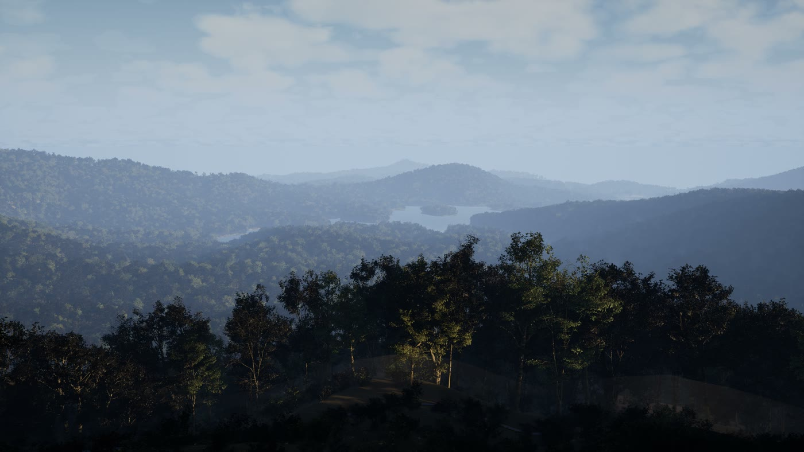

Your land, before it’s built.
Films of real lots and tracts, built from public lidar and aerial photos: the lot line on the ground, the land in contours, and the view from where a house would sit.
These are studio films made from real listings. We are taking our first commissions.
Send a parcel ↓
What a drone can’t show.
A drone shows what a lot looks like today from the air. A buyer deciding on land needs to know where the line runs, how the ground falls, and what they would see from the porch.






Two films in full.
Eighty seconds each, with sound recorded in the same kind of country. Press play.
We have also made 100+ full-length terrain films for TrailGoat. See them at trailgoat.run ↗ (opens in a new tab)
Where every figure comes from.
Nothing goes on screen that we can’t source. That rule is the product.
The ground and the trees
USGS lidar at one metre. The trees in the film are the ones the lidar measured, at the heights it measured, with the flight date stated.
The lot line
The county’s parcel map, labelled “boundaries approximate (county GIS, not a survey)” whenever the line or the acreage is on screen.
The view
A line-of-sight study through the real tree canopy from where a deck would sit. On Petit Ridge, bare ground suggested most of the lake was in view. Through the measured trees it was about a fifth, and that is what the film says.
Anything not built yet
A house or a division of lots that does not exist is labelled a concept for as long as it is on screen.
Send a parcel.
An address or a county parcel ID is enough. We check the lot against the listing and tell you what the film can show before you commit.
You receive the 16:9 film, a vertical cut for social and six stills.
Lot film
$950
One lot or homesite, about 80 seconds, with the cuts and stills above.
Tracts, timber and communities
Quoted by size and what the film has to show.
Good questions.
How long does a film take?+
About a week from the address to a reviewed film. Most of that is checking the facts and your review; the film itself is built from data we can download the same day.
How accurate is it?+
The ground comes from USGS lidar at one metre and the trees are the real ones the lidar measured. Lot lines come from the county’s parcel map, which is approximate and not a survey, and the film says so on screen. Every figure carries the date of its data.
What if the county’s lines disagree with the listing?+
It happens. We check the parcel against the listing before we build, quote the listing’s acreage and say that boundaries are approximate. If the difference is large we ask you before going further.
Can it show a house that is not there?+
Yes, as a concept home, and it is labelled as an artist’s rendering for every second it is on screen. The same goes for a concept division of a larger tract.
Can I use it on the MLS?+
MLS rules on rendered media differ from one system to the next. We check your MLS’s rules with you and, where they allow it, prepare a version for it with every rendered element labelled.
Who owns the film?+
You do, for the listing it was made for. We ask to show it as an example of our work.
say hi
Let’s make
an impression.
Tell us what you want your business to know, do or see. We’ll find the smallest useful place to start.
Send a project briefImagination. Made tangible.